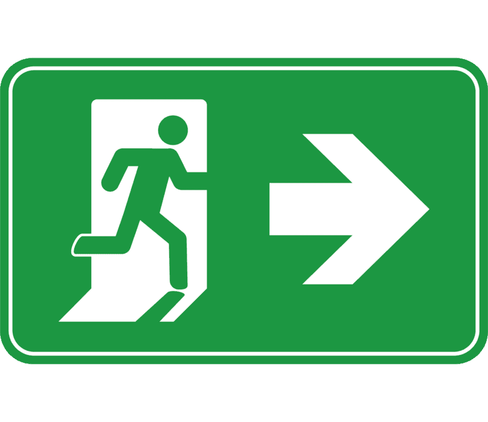
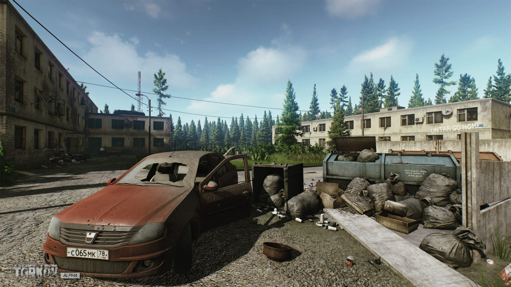
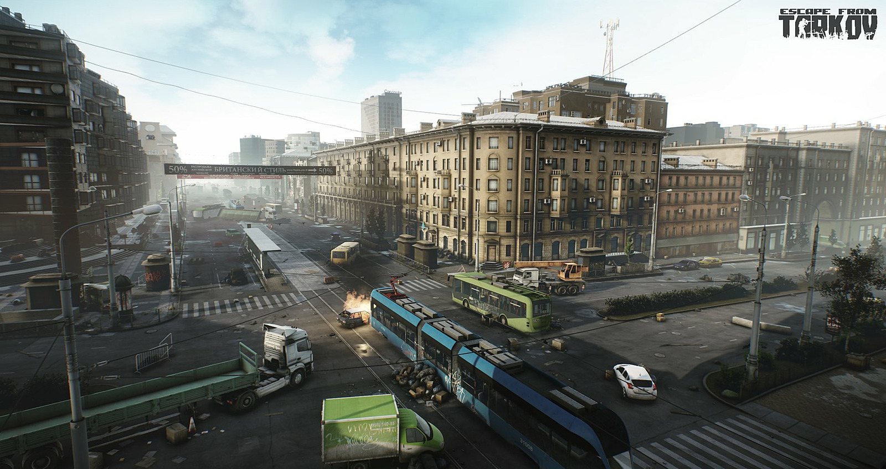
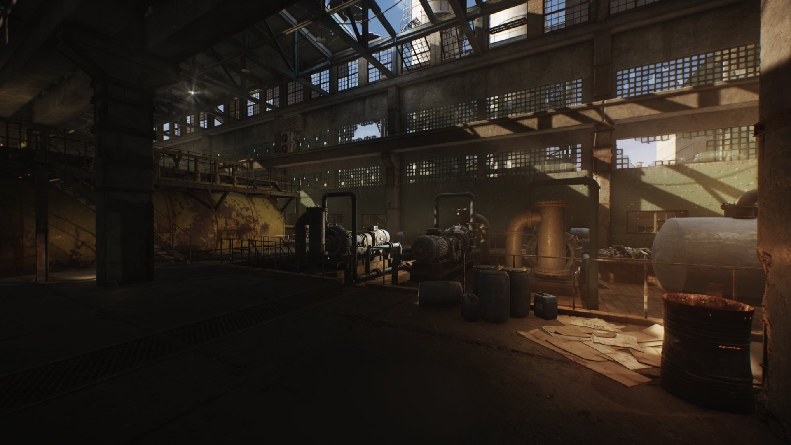
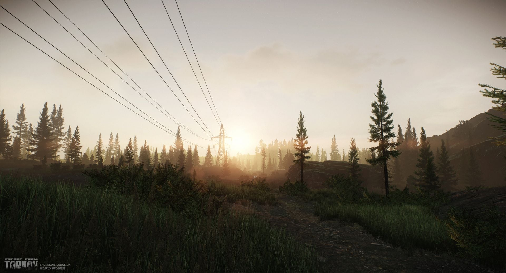
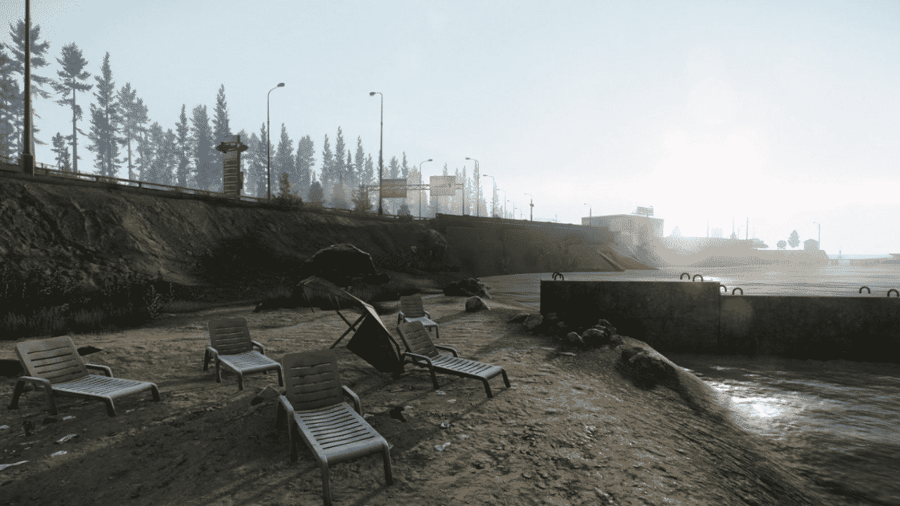
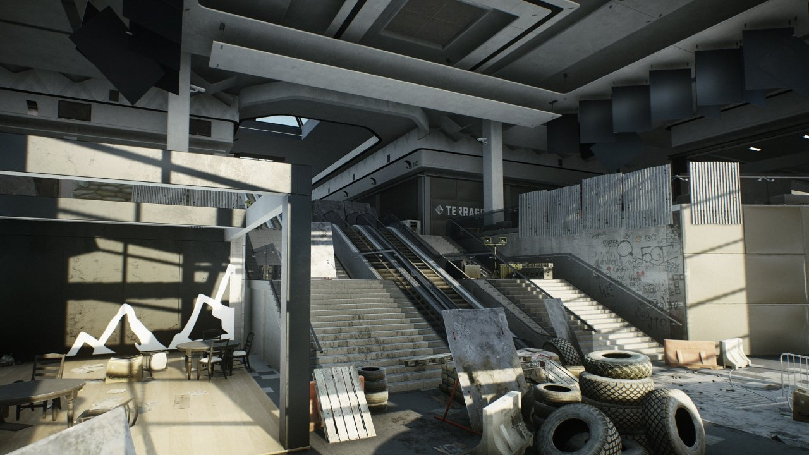
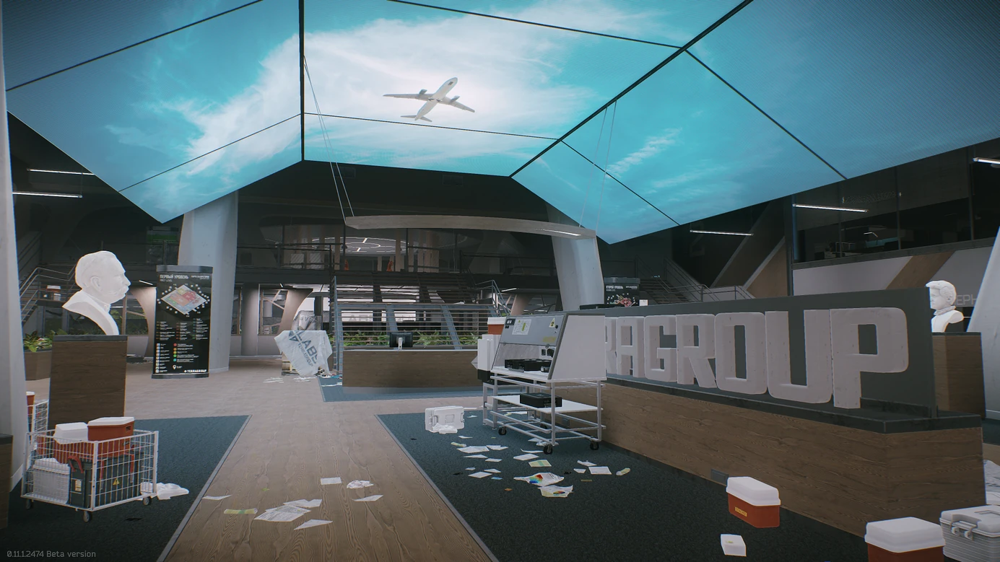
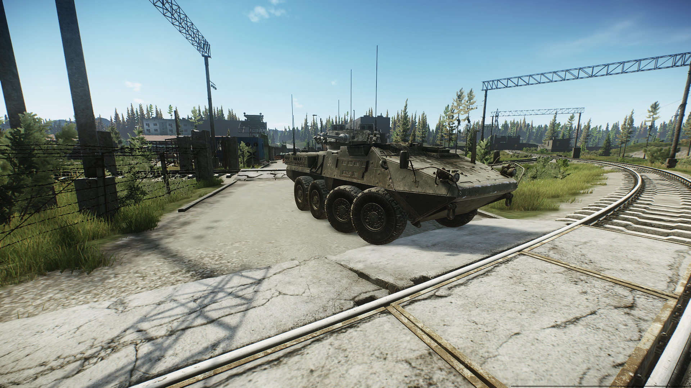
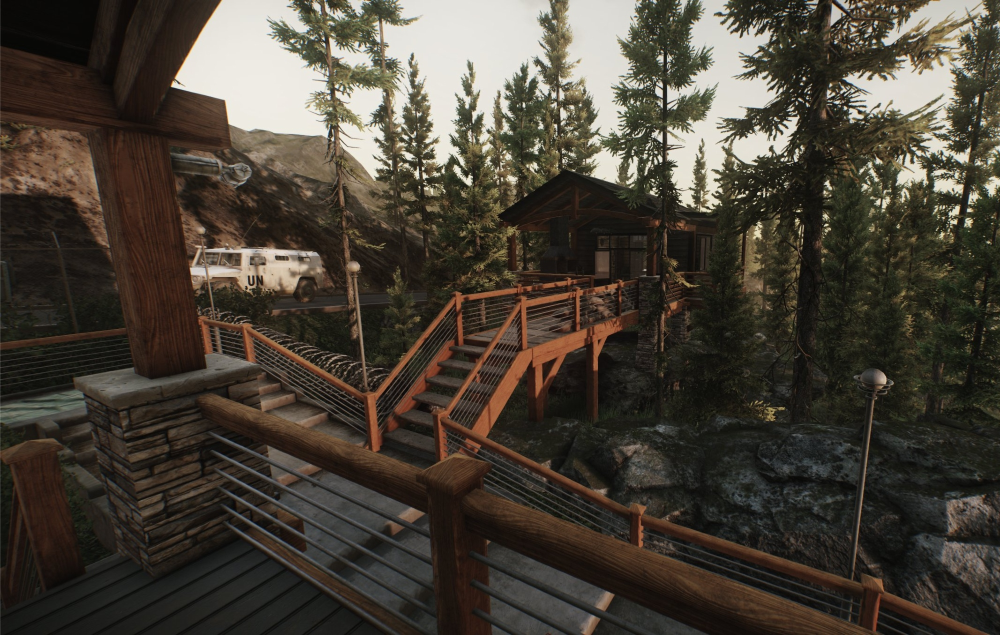

Welcome to the Maps section of the Escape From Tarkov website! Here you will find information about the various maps
you can deploy in the game, this is what you would call a "Raid". How it works is from the main menu, after you gear up, you are able to select which map you want to
deploy to. Each map is designed to be realistic and immersive, with a variety of environments and locations to explore.
After loading into a map, you are able to explore, find loot, complete quests, and fight scavengers (Scavs) as well as
other players that also deployed to the same map. Next, I will be providing a quick overview of each map you are able to play.
Maps
Ground Zero
Customs
Streets of Tarkov
Factory
Woods
Shoreline
Interchange
The Lab
Reserve
Lighthouse

Extracts
Extracts are designated locations where players can exit the map after completing objectives or surviving the match.
Each map has multiple extracts, and choosing the right one can be crucial for a successful escape. Depending on the map, extracts can
be located in various areas, such as buildings, roads, or hidden spots. Players must be cautious when approaching extracts,
as they can be hotspots for ambushes and player encounters. Understanding the layout of each map and the locations of extracts
is essential for planning your strategy and ensuring a safe exit from the battlefield. There is also a risk of running out of time in
a raid.
Ground Zero
Ground Zero is the starting map for new players in Escape From Tarkov. It is a small, densely populated area with a variety of
locations to explore and loot. This allows players to run into other players more than on larger maps. It is a great place for
new players to get familiar with the game mechanics and combat systems. It has a simple layout while packing in what a new player
will prepare for with more difficult maps.

Customs
Customs is a medium-sized map that features a mix of urban and industrial areas. It is known for its high player traffic and intense
combat situations. There are many areas to loot and explore, making it a popular choice for players looking for a balanced gameplay
experience. This map is a great place for players to practice their combat skills and learn the ins and outs of the game. It has a variety of
locations to explore, including warehouses, factories, and residential areas. It is a great place for players to test their skills and learn
the mechanics of the game. The map is designed to be challenging, with a variety of obstacles and enemies to overcome. Players will need to
be strategic and tactical in order to succeed on this map.

Streets of Tarkov
Streets of Tarkov is a sprawling urban map with a variety of districts and buildings. It is known for its dynamic events and high
player interaction. In another page I will discuss the loot system in more detail, but this map is known for its
high-value loot locations and intense firefights. Players will need to be strategic and tactical in order to succeed on this map,
as it is a high-risk, high-reward environment. The map is designed to be challenging, with a variety of obstacles and enemies to
overcome. This is more of a central map taking place in the middle of the city where eveyrthing began.

Factory
Factory is a small, close-quarters map that is known for its fast-paced combat and high player density. It is a popular choice for
players looking for quick and intense matches. Maps contain transits to other matches, allowing players to move between maps and
continue their gameplay experience. Factory has a special transit into "The Lab" map, which will be disccused more in the labs section.

Woods
Woods is a large, forested map with a variety of outdoor environments. It is known for its long-range combat and strategic gameplay.
These woods are covered with mystery and danger, making trees and bushes your best friend. This map is a good place to practice
stealth.

Shoreline
Shoreline is a coastal area with a mix of urban and rural environments. It is known for its high-value loot locations and
intense firefights. It contains a large resort area that is a hotspot for player encounters and loot.

Interchange
Interchange is a large shopping mall complex with multiple floors and interconnected areas. It is known for its close-quarters combat
and high player density. That isn't all however, this map also has a large outdoor area around the mall, making getting to and from
the mall a challenge on its own.

The Lab
The Lab is an underground research facility with multiple levels and complex layouts. You are only allowed into Labs if you have a
"Labs Card" which grants you access to the map.It is known for its high-risk,high-reward gameplay and challenging geared AI enemies
called "Black Division". To gain access to this map you're required to transit
from either Factory or Streets of Tarkov while holding the Labs Card. Transit can be dangerous as previously mentioned, however if you follow the story chapter
inscructions, visiting 3 specific spots on this map then you are granted straight access to the lab map from main menu.

Reserve
Reserve is a military base with a mix of indoor and outdoor areas. It is known for its strategic gameplay and
high-value loot locations. There is a series of bunkers underneath the map that are hotspots for players, also containing
extracts.

Lighthouse
Lighthouse is a small coastal area with a lighthouse and surrounding buildings. It is known for its tight
corridors and intense firefights. This map always spawns Rouge units which are another type of AI enemy that are geared.
This is a coastal map with warehouses and resorts. Per the story, this is where first group of PMCs set up camp after the war started.